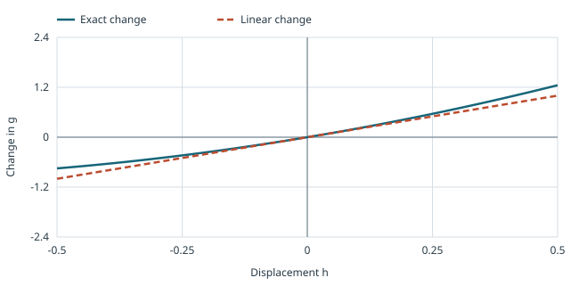

Disclaimer: materials in this pdf are used for STAT 709 “Mathematical Statistics” at the University of Wisconsin–Madison, but they are not guaranteed to be accurate. Consult textbooks whenever possible.
Purpose. A large-sample distribution turns an estimation error into a usable uncertainty scale.
Progression. We first learn when transformations preserve convergence, then linearize a smooth estimator, and finally examine where the approximation can fail.
Main route. The main route is continuous mapping, Slutsky and the delta method, followed by examples and plug-in estimation.
Optional context. GMM, small-sample refinements and growing dimensions supply optional context.
In classical asymptotic theory, one of the most useful results is asymptotic normality. Generally speaking, if \(\theta\) is an unknown parameter, and \(\hat \theta_n\) is a reasonable estimator (as usually stated across books/papers), then \(\sqrt{n}(\hat \theta_n - \theta) \stackrel{d}{\longrightarrow} N(0, \sigma_{\theta}^2)\) for certain variance \(\sigma_{\theta}^2\). It is the basis for deriving \(p\)-values and confidence intervals for large-sample settings.
1. Convergence of transformations
First, we introduce two useful theorems.
Let \(X,X_{1},X_{2},...\) be random vectors in \(\R^d\) defined on a common probability space and \(g\) be a measurable function from \((\R^{d},\mathcal{B}^{d})\) to \((\R^{l},\mathcal{B}^{l})\). Suppose that \(g\) is continuous a.s. with respect to \(\mu_{X}\) (namely the measure induced by \(X\)). Then
(i) \(X_{n}\stackrel{a.s.}\longrightarrow X\) implies \(g(X_{n})\stackrel{a.s.}\longrightarrow g(X)\).
(ii) \(X_{n}\stackrel{p}\longrightarrow X\) implies \(g(X_{n})\stackrel{p}\longrightarrow g(X)\).
(iii) \(X_{n}\stackrel{d}\longrightarrow X\) implies \(g(X_{n})\stackrel{d}\longrightarrow g(X)\).
Proof requirements.
All three conclusions are required. The proofs of parts (i) and (ii) are required; the proof of part (iii) is optional.
Proof. Parts (i) and (ii): required.
For (i), it is essentially pointwise convergence except for a zero-measure set. Here is a detailed proof. Let \[A_0 = \{\omega \in \Omega: \lim_n X_n(\omega) = X(\omega) \} , \qquad D = \{x \in \R^d: g \text{ is continuous at }x \}\] By assumptions, \(P(A_0^c) = 0\) and \(\mu_X(D^c) = P(X^{-1}(D^c)) = 0\). Thus, the probability of the set/event \(A= A_0\cap X^{-1}(D)\) is \(1\). For every \(\omega \in A\), we have pointwise convergence: \(\lim_n X_n(\omega) = X(\omega)\) and \(g\) is continuous at \(X(\omega)\), so \(\lim_n g(X_n(\omega)) = g(X(\omega))\).
For (ii), our goal is to show, for any \(\veps > 0\), \(\lim_n P(\| g(X_n) - g(X) \| > \veps) = 0\). A proof is straightforward if we impose stronger assumptions such as \(g\) is uniformly continuous or Lipschitz continuous; in the Lipschitz case \(\| g(X_n) - g(X) \| \le L \| X_n - X \|\) so \[X_n \stackrel{p}{\longrightarrow} X \quad \Longrightarrow \quad \lim_n P( \| X_n - X \| > \veps/L ) = 0 \quad \Longrightarrow \quad \lim_n P( \| g(X_n) - g(X) \| > \veps ) = 0.\] For the general case, every subsequence of a sequence converging in probability has a further subsequence converging almost surely: choose indices with \(\PR(\|X_{n_j}-X\|>2^{-j})<2^{-j}\) and apply the first Borel–Cantelli lemma. Part (i) transfers that further subsequence through \(g\). If \(g(X_n)\) failed to converge in probability, there would be a subsequence with some fixed error probability bounded away from zero, contradicting this almost-sure further subsequence. This proves (ii). ◻
Low priority—not examined: Continuous mapping: proof of part (iii)
Proof. Part (iii): optional.
For (iii), first we apply Skorokhod’s theorem (see [2][Thm. 3.2.8] alternatively): If \(X_{n}\stackrel{d}\rightarrow X\), then there are random vectors \(Y,Y_{1},Y_{2},...\) defined on a common probability space such that \(\mu_{Y}=\mu_{X}\), \(\mu_{Y_{n}}=\mu_{X_{n}},n=1,2,...,\) and \(Y_{n}\stackrel{a.s.}\rightarrow Y\). Then we use Theorem 1 (i) and complete the proof. ◻
Instructor’s NoteContinuous transformations carry limits with them
Intuition. Intuitively, a continuous transformation is a rule that keeps nearby inputs nearby. Once we understand the limit of an estimator, we can reuse it after changing how we report the estimator.
Examples. For example, \(T_n\to_p\theta\) gives \(T_n^2\to_p\theta^2\), and \(Z_n\Rightarrow N(0,1)\) gives \(Z_n^2\Rightarrow\chi_1^2\). The transformation need not be linear or invertible.
Continuity. A discontinuity matters only if the limit can land there: \(X_n=1/n\to0\), but \(g(x)=\mathbf{1}_{\{x>0\}}\) gives \(g(X_n)=1\ne g(0)\).
Connection to the delta method. The continuous mapping theorem carries the limit through a transformation; the delta method will zoom in to describe the size of the remaining fluctuations. See Bartlett’s Stat 210B notes, slides 15–16, for the theorem and transformed-limit examples.
Low priority—not examined: Practice: Another proof of continuous mapping
See Exercise 9 in Section 7 for the full statement and complete solution.
Let \(X,X_{1},X_{2},...,Y_{1},Y_{2},...\) be random variables on a probability space. Suppose that \(X_{n}\stackrel{d}\rightarrow X\) and \(Y_{n}\stackrel{p}\rightarrow c\), where c is a fixed real number. Then
(i) \(X_{n}+Y_{n}\stackrel{d}\rightarrow X+c\).
(ii) \(Y_{n}X_{n}\stackrel{d}\rightarrow cX\).
(iii) \(X_{n}/Y_{n}\stackrel{d}\rightarrow X/c\) if \(c\neq 0\).
Study guidance.
The proofs of Theorem 2 are not required. You are encouraged to derive one or two of its results on your own, then check the remaining results against Shao’s textbook proof (Theorem 1.11 in [5]).
In statistics, \(Y_{n}\) is usually a sequence of consistent estimators, so this theorem gives a limiting characterization.
Recall from the previous lecture that \(Y_{n}\stackrel{p}\rightarrow c\) is equivalent to \(Y_{n}\stackrel{d}\rightarrow c\). So Theorem 2 establishes arithmetic properties about convergence in distribution. It is important that we assume \(Y_{n}\) converges to a constant; otherwise these conclusions do not follow from marginal convergence alone.
If we think of \(Z_n = (X_n, Y_n) \in \R^2\) as a two-dimension random vector, then convergence of \((X_n)_{n \ge 1}\) and \((Y_n)_{n \ge 1}\) only gives us information about the marginal distribution of \(Z_n\), so we don’t know how \(X_n\) and \(Y_n\) are coupled. Consider an example of perfect negative correlation: \(X_n = - Y_n\) and both converge in distribution to \(G \sim N(0,1)\). Then, \(X_n + Y_n \equiv 0\) instead of \(2G\).
Transforming convergence.
Continuous mapping transfers convergence through a map continuous at the limiting random vector almost surely. Slutsky allows a random denominator to be replaced by a nonzero probability limit without assuming independence.
See Exercise 1 in Section 7 for the full statement and complete solution.
2. Delta method
Study requirement.
You are required to master both the delta-method theorem and its proof. This is a core theoretical result in mathematical statistics: it explains how a local linear approximation determines an estimator’s limiting distribution.
A common scenario in statistics is to build new estimators from existing ones, so it is useful to know how to transfer the asymptotic properties. For example, \(\{X_{n}\}\) is usually a sequence of estimators, then what is the property of \(g(X_{n})\)?
Let \(X_{1},X_{2},...\) and \(Y\) be random vectors in \(\R^k\) satisfying
\[a_{n}(X_{n}-c)\stackrel{d}\longrightarrow Y,\]
(1)where \(c\in\R^{k}\) and \(\{a_{n}\}\) is a sequence of positive numbers with \(\lim_{n\rightarrow\infty}a_{n}=\infty\). Let \(g\) be a function on \(\R^{k}\) to \(\R\). If \(g\) is differentiable at \(c\), then \[a_{n}[g(X_{n})-g(c)]\stackrel{d}\longrightarrow [\nabla g(c)]^{\top}Y,\] where \(\nabla g(x) \in \R^k\) denotes the gradient of \(g\) at \(x\).
In the special case where \(g\) is a linear function, then the result follows from Cramér-Wold theorem from Lecture 10. In general, we want to argue that \(g\) can be linearized in a local neighborhood around \(c\).
Proof. Let \[Z_{n}=a_{n}[g(X_{n})-g(c)]-a_{n}[\nabla g(c)]^{\top}(X_{n}-c).\] It suffices to show \(Z_{n}=o_{p}(1)\), since the conclusion will follow by combining \(Z_{n}=o_{p}(1)\) and Eqn. 1 due to Slutsky’s theorem.
The differentiability of \(g\) at \(c\) implies that for any \(\epsilon>0\), there is a \(\delta_{\epsilon}>0\) such that
\[|g(x)-g(c)-[\nabla g(c)]^{\top}(x-c)|\leq\epsilon\left\|x-c\right\|\]
(2)whenever \(\left\|x-c\right\|<\delta_{\epsilon}\). Let \(\eta>0\) be any fixed scalar. When \(|Z_n| \ge \eta\), then at least one of the two events happen: \(\|X_n - c \| \ge \delta_{\veps}\) and \(a_n \epsilon \|X_n - c \| \ge \eta\); this is because \(\|X_n - c \| < \delta_{\veps}\) implies \(|Z_n| \le a_n \epsilon \|X_n - c\|\) due to Eqn. 2.
By the union bound, namely \(A_{0}\subset A_{1}\cup A_{2}\Rightarrow \PR(A_{0})\leq P(A_{1})+P(A_{2})\), we obtain \[\PR(|Z_{n}|\geq\eta)\leq \underbrace{\PR(\left\|X_{n}-c\right\|\geq\delta_{\epsilon})}_{I_{1}}+\underbrace{\PR(a_{n}\left\|X_{n}-c\right\|\geq\eta/\epsilon)}_{I_{2}}.\] By the assumption \(\lim_{n\to \infty} a_n = \infty\) and Slutsky’s theorem, we have \(X_{n}\stackrel{p}\rightarrow c\). So as \(n \to \infty\), \[I_{1}=\PR(\left\|X_{n}-c\right\|\geq\delta_{\epsilon})\longrightarrow 0\] For \(I_2\), the limit is not generally zero for fixed \(\epsilon\). Instead \(a_n(X_n-c)\Rightarrow Y\) implies tightness. Given \(\alpha>0\), choose \(M\) with \(\limsup_n\PR(a_n\|X_n-c\|>M)<\alpha\), then choose \(\epsilon\) so that \(\eta/\epsilon>M\). With this \(\epsilon\) fixed, \(I_1\to0\), and hence \(\limsup_n\PR(|Z_n|\ge\eta)\le\alpha\). Let \(\alpha\downarrow0\). Thus \(Z_n=o_p(1)\), completing the proof. ◻
As a simple consequence, when the asymptotic distribution \(Y\) is normal, then a differentiable transformation has a first-order Gaussian limit (possibly degenerate).
Assume the weak convergence of Eqn. 1. If \(Y\sim N(0,\Sigma)\), then
\[a_{n}[g(X_{n})-g(c)]\stackrel{d}\longrightarrow \mathcal{N}(0,[\nabla g(c)]^{\top}\Sigma\nabla g(c)).\]
(3)Sometimes the first-order Taylor expansion is not sufficient for our purposes. The following example is taken from [5][Example. 1.31].
Let \((X_n)_{n \ge 1}\) be a sequence of random variables satisfying \(\sqrt{n}(X_n - c) \stackrel{d}{\rightarrow} N(0,1)\). Consider the function \(g(x)= x^2\).
If \(c \neq 0\), then the (first-order) delta method gives \(\sqrt{n}(X_n^2 - c^2) \stackrel{d}{\longrightarrow} N(0,4c^2)\).
If \(c = 0\), then the (first-order) delta method does not give a useful result. Instead, if we consider second-order Taylor expansion then \(n\, X_n^2 \stackrel{d}{\longrightarrow} \chi_1^2\) (see Exercise 5), where \(\chi_1^2 \stackrel{d}{=} [N(0,1)]^2\) is the chi-square distribution.
In case 2, if we insist on using \(\sqrt{n}X_n^2\) for the delta method, we get convergence to a degenerate distribution where the variance is zero. This means that we don’t get useful distribution information, which motivates us to zoom in and consider a larger factor \(n\) instead of \(\sqrt{n}\).
Suppose we find \(T_n(X)\) such that \(\sqrt{n}(T_n(X) - \theta) \stackrel{d}{\to} \mathcal{N}(0, \sigma^2)\). Assume \(0<\sigma^2<\infty\). If \(\sigma^2\) is unknown, replace it by a consistent estimator \(\hat{\sigma}_{n}^2\) and take \(\hat{\sigma}_n\) to be its nonnegative square root. Then by Slutsky’s theorem, \[\begin{aligned} \frac{\sqrt{n}(T_n(X) - \theta)}{\hat{\sigma}_{n}} \stackrel{d}{\longrightarrow} \mathcal{N}(0, 1). \end{aligned}\]
Instructor’s NoteA tangent transports uncertainty
Imagine a small horizontal cloud around \(c\). A nonzero slope tilts and stretches this cloud; the delta method tracks that first-order stretch. At a flat point, the tangent loses the information, so the curvature and a different magnification become relevant.
| Displacement h | Exact change | Linear change |
|---|---|---|
| -0.5 | -0.75 | -1 |
| 0 | 0 | 0 |
| 0.1 | 0.21 | 0.2 |
| 0.5 | 1.25 | 1 |
The curves evaluate the source formulas. They illustrate their behavior; they are not a proof. Read the explanation.
Picture: linear and quadratic scales.
For \(g(x)=x^2\) and a displacement \(h\), the exact change is \(2ch+h^2\) and its linear approximation is \(2ch\). At \(c=1\) and \(h=0.1\), these are \(0.21\) and \(0.20\); at \(c=0\) they are \(0.01\) and \(0\). In the HTML explorer, vary \(c\in[-2,2]\) while \(h\in[-0.5,0.5]\) remains on the fixed horizontal axis. The separation between the curves is \(h^2\). This illustrates the approximation error, not a simulated proof.
First-order uncertainty.
The delta method multiplies a limiting fluctuation by the derivative at the probability limit. A zero derivative can erase this first-order limit and require a different scale.

See Exercise 2 in Section 7 for the full statement and complete solution.
3. Prevalence of asymptotic normality
In classical statistics, we expect that many common estimators have the asymptotic normality property, which forms the core of large-sample theory. For an estimator problem, we want to construct a consistent estimator with asymptotic variance (e.g., the variance in Eqn. 3) as small as possible, so there is less uncertainty and more accuracy in estimation.
Asymptotic Variance.
Let \((a_n)_{n\ge 1}\) be a positive sequence, and either \(a_n\to\infty\) or \(a_n \to a > 0\). Assume \[\begin{aligned} a_n(T_n(X) - \theta) \stackrel{d}{\longrightarrow} Y \qquad \text{ with } 0 < \mathbb{E}Y^2 < \infty. \end{aligned}\]
(i) The asymptotic variance of the estimator \(T_n(X)\) is defined to be \[\begin{aligned} \frac{\Var(Y)}{a_n^2} . \end{aligned}\]
(ii) Let \(T_n'(X)\) be another estimator. Asymptotic relative efficiency is defined to be the ratio between two asymptotic variances.
(iii) One important fact is
\[\begin{aligned} \mathbb{E}Y^2 \le \mathop{\lim\inf}_{n\to\infty} \mathbb{E}[a_n^2(T_n - \theta)^2] \end{aligned}\]
(4)If \(\E Y=0\), then \(\Var(Y)=\E Y^2\) gives a lower bound on the limiting scaled MSE in Eqn. 4; this is not a pointwise finite-\(n\) inequality. Symmetry about zero with integrability is one way to obtain \(\E Y=0\). It is possible that we have a strict inequality in Eqn. 4 and a very large gap even exists; see Example 2 below.
Equation 4 is due to the following fact: if \(X_n \stackrel{d}{\rightarrow} X\), then for any continuous (but possibly unbounded) function \(f: \R \to \R\) satisfying \(\mathbb{E}[|f(X)|] < \infty\) we have \(\mathbb{E} [|f(X)|] \le \liminf_{n \to \infty} \mathbb{E} [|f(X_n)|]\). (See Exercise 6 for the complete truncation proof.)
Consider i.i.d. Bernoulli random variables \(X_1,\ldots,X_n\) with \(P(X_i = 1) = p\) where \(p \in (0,1)\) is unknown. Both MoM and MLE lead to the sample mean estimator for \(p\): \(\hat p(X) = \bar X\). Now suppose we want to estimate \(\theta = p^{-1}\). Consider the plug-in estimator \[\hat \theta_n = \begin{cases}1/\bar X,&\bar X>0,\\n^n,&\bar X=0.\end{cases}\] We apply the delta method with transformation \(g(x) = 1/x\) to obtain \[\sqrt{n}\, (\hat \theta - \theta) \stackrel{d}{\longrightarrow} N\big(0, \frac{1-p}{p^3} \big)\] The exceptional event has probability \((1-p)^n\to0\), so this finite definition has the displayed delta-method limit. Yet \(\E\hat\theta_n\ge n^n(1-p)^n\to\infty\). The original unmodified reciprocal, interpreted as \(+\infty\) at \(\bar X=0\), has infinite expectation for every \(n\). Both versions preserve the lesson: the limiting distribution does not control moments.
Intuitively, convergence in distribution does not control the tail behavior. That is why the second moment of the limiting distribution is bounded by the liminf of the scaled second moments. Actual variances require control of the corresponding means.
3.1. Method of moments
Continuous mapping transfers convergence through a map continuous at the limiting random vector almost surely. Slutsky allows a random denominator to be replaced by a nonzero probability limit without assuming independence.
Recall that we want to estimate a quantity \(\theta = \theta(P) \in \R^k\) of an unknown distribution (either parametric or nonparametric). Suppose its \(k\)-th moment exists, and denote \(\mu_j = \mathbb{E}_{X \sim P} X^j\) for \(j \le k\). Also suppose that we can find a one-one mapping \(h: \R^k \to \R^k: \mu:=(\mu_1,\ldots,\mu_k) = h(\theta_1,\ldots,\theta_k)\) and denote \(g = h^{-1}\).
We use i.i.d. observations \(X_1,\ldots,X_n \in \R\) to construct empirical moments \[\hat \mu_j = \frac{1}{n} \sum_{i=1}^n X_i^j\] If \(h^{-1}\) is continuous, then we know that by SLLN and continuous mapping theorem1 \[\begin{aligned} \hat{\theta} = h^{-1}(\hat{\mu}) \stackrel{a.s.}{\longrightarrow} \theta, \qquad \text{as } n \to \infty. \end{aligned}\] To find the asymptotic distribution of MoM estimator \(\hat \theta\), we make further assumptions: \(g\) is differentiable at \(\mu\) and \(\mathbb{E}[|X_1|^{2k}] < \infty\). Then, by an application of the delta method, \(\hat{\theta}\) is asymptotically normal, satisfying \[\begin{aligned} \sqrt{n}\, (\hat \theta - \theta) \stackrel{d}{\longrightarrow} N\big(0, Dg(\mu)V_\mu Dg(\mu)^\top\big), \end{aligned}\] where \(Dg\) is the Jacobian with entry \(\partial g_i/\partial\mu_j\), and \(V_\mu \in \mathbb{R}^{k\times k}\) is given by \[\begin{aligned} [V_\mu]_{ij} = \mu_{i+j} - \mu_i \mu_j. \end{aligned}\]
See Exercise 3 in Section 7 for the full statement and complete solution.
3.2. Maximum likelihood estimation
The delta method multiplies a limiting fluctuation by the derivative at the probability limit. A zero derivative can erase this first-order limit and require a different scale.
In local asymptotic theory, regularity requires the estimator to have a stable limiting error law under parameter perturbations of order \(n^{-1/2}\). This restriction excludes isolated-point improvements such as superefficiency; a full definition belongs to advanced asymptotic theory.
Scope of this discussion.
Rigorous results on maximum likelihood estimation will be stated in STAT 710. Here we adopt a non-rigorous, physicist’s approach: expand near the true parameter and see how the score fluctuation and likelihood curvature determine the estimator’s uncertainty.
Let \(P_{\theta} \in \mathcal{P}\) be an unknown distribution from a parametric family where \(\theta \in \R^k\). Suppose we have \(n\) i.i.d. observation \(X = (X_1,\ldots,X_n)\) from \(P_{\theta}\) with a common pdf \(f_{\theta}(x)\). We know that the log likelihood function \(\ell_n(\theta; X) = \sum_{i=1}^n \log f_{\theta}(X_i)\). Suppose that \(\ell\) is differentiable with respect to \(\theta\). Let the MLE be \(\hat \theta\), which, if it is an interior differentiable maximizer, satisfies \[\nabla_{\theta} \ell_n(\hat \theta; X) = 0.\] Taking consistency of the MLE as a starting point, let us work out the asymptotic distribution of \(\hat\theta\).
Instructor’s NoteExpanding the score like a physicist
Intuition. Keep the original mental picture: a consistent maximizer is close to the true parameter, so expand the score nearby and ask which random fluctuation moves its zero.
Interpretation. The score is the slope; the information is the stiffness resisting that movement.
Write \(s_\theta(x)=\nabla_\theta\log f_\theta(x)\) and \(V=\E_\theta s_\theta(X_i)s_\theta(X_i)^\top\). Under a fixed support and justified differentiation under the integral, \(\E_\theta s_\theta(X_i)=0\) and \(\E_\theta\nabla_\theta^2\log f_\theta(X_i)=-V\) (Exercise 7). The log density itself generally does not have mean zero. The multivariate CLT gives \[n^{-1/2}\nabla\ell_n(\theta)\Rightarrow N(0,V).\] Assume \(V\) is positive definite, \(\hat\theta\to_p\theta\) is an interior score root, and the Hessian averaged along the segment from \(\theta\) to \(\hat\theta\), divided by \(n\), converges in probability to \(-V\). The integral Taylor identity then yields \[0=\nabla\ell_n(\theta)+\left\{\int_0^1\nabla^2\ell_n(\theta+t(\hat\theta-\theta))\,dt\right\}(\hat\theta-\theta),\] so \[\sqrt n(\hat\theta-\theta)=V^{-1}n^{-1/2}\nabla\ell_n(\theta)+o_p(1)\Rightarrow N(0,V^{-1}).\] The sign is positive after moving the score across the negative Hessian. The matrix \(V\) is the one-observation Fisher information. Under the regularity assumptions of efficiency theory, this variance is optimal among regular estimators2; Lecture 13 studies its unbiased-estimation counterpart. Consistency and a pointwise LLN alone do not justify the Hessian approximation at a random parameter.
Asymptotic likelihood.
The score has mean zero under justified differentiation, while its negative expected derivative is information. A consistent interior root and control of the Hessian near the true parameter turn the score CLT into asymptotic normality.
3.3. Generalized method of moments
Low priority—not examined: Generalized method of moments
Recall that we introduced a way of generalizing moments. Suppose \(X_1, \ldots, X_n \stackrel{\iid}{\sim }P_\theta\), \(X_i \in \mathbb{R}^p\), \(\theta\in\Theta\), where \(\Theta\) is compact for simplicity. Let \(g: \mathbb{R}^{p}\times\Theta \to\mathbb{R}^{m}\) be a continuous function, such that \[\begin{aligned} \mathbb{E}[g(X_i, \theta)] = 0. \end{aligned}\] Write \(\Theta\subset\R^k\). The number \(m\) of moment equations may exceed the parameter dimension \(k\); the observation dimension \(p\) is separate. Let \(W \in \mathbb{R}^{m\times m}\) be a positive definite matrix. Define generalized method of moments (GMM) estimator as \[\begin{aligned} \hat{\theta} \in \arg\min_{\theta\in\Theta} \left(\frac{1}{n}\sum_{i=1}^{n}g(X_i, \theta)\right)^\text{T}W\left(\frac{1}{n}\sum_{i=1}^{n}g(X_i, \theta)\right). \end{aligned}\] We also write \(\hat{\theta}(W, X)\) or simply \(\hat{\theta}(W)\) to emphasize the dependence on \(W\).
Consistency of GMM estimators.
Suppose that \(X_1, \ldots, X_n \stackrel{i.i.d.}{\sim} P_{\theta_0}\), \(\theta_0 \in \Theta\),
(1) (Identifiability). \(W\mathbb{E}[g(X_i, \theta)] = 0\), if and only if \(\theta = \theta_0\).
(2) (Regularity). \(\mathbb{E}[\sup_{\theta\in\Theta}\|g(X_i, \theta)\|] < \infty\).
Then for any fixed \(W\), \[\begin{aligned} \hat{\theta}(W) \stackrel{P }{\to }\theta_0,\text{ as } n \to \infty. \end{aligned}\]
Condition (1) is necessary, because we need to make sure the population minimizer is unique. Otherwise, \(g\) may be just duplicates of a single moment equation.
Proof. Proof idea.
Denote \[\begin{aligned} Q_n(\theta) &= \left(\frac{1}{n}\sum_{i=1}^{n}g(X_i, \theta)\right)^\text{T}W\left(\frac{1}{n}\sum_{i=1}^{n}g(X_i, \theta)\right),\\ Q(\theta) &= \left(\mathbb{E}[g(X_i, \theta)]\right)^\text{T}W\left(\mathbb{E}[g(X_i, \theta)]\right). \end{aligned}\] Use ULLN to show \[\begin{aligned} \sup_{\theta\in\Theta}|Q_n(\theta) - Q(\theta)| \stackrel{P }{\to } 0. \end{aligned}\] The minimizer of \(Q(\theta)\) is unique \(\theta = \theta_0\). So, \[\begin{aligned} \hat{\theta} \stackrel{P }{\to } \theta_0. \end{aligned}\] (Recall Homework 4 Problem 6). ◻
Consistency holds if \(W\) is replaced by \((W_n)_{n\ge 1}\) with \[\begin{aligned} W_n \stackrel{P }{\to } W. \end{aligned}\]
Optimal weighting and asymptotic efficiency.
Suppose \(g \in C^1(\mathbb{R}^p \times \Theta)\). Denote \[\begin{aligned} G = \mathbb{E}[\nabla_\theta g(X_i, \theta_0)] \in \mathbb{R}^{m\times p},\quad \Omega = \mathbb{E}[g(X_i, \theta_0)g(X_i, \theta_0)^\text{T}] \in \mathbb{R}^{m\times m}. \end{aligned}\] Asymptotic Normality. In addition to conditions (1) and (2), assume that
(3) \(\mathbb{E}[\sup_{\theta\in\Theta}\|\nabla g(X_i, \theta)\|] < \infty\).
(4) \(G^T WG\) is nonsingular, which is satisfied if \(G\) has full column rank and \(W \succ 0\).
Then, \[\begin{aligned} \sqrt{n}(\hat{\theta} - \theta_0)\stackrel{d }{\to} \mathcal{N}(0, \underbrace{(G^\text{T}WG)^{-1}G^\text{T}W\Omega W^\text{T}G(G^\text{T}W^\text{T}G)^{-1}}_{V(W)}). \end{aligned}\]
Optimal weighting. Suppose \(\Omega \succ 0\). Then \[\begin{aligned} V(\Omega^{-1}) \preceq V(W),\quad \forall W \succ 0. \end{aligned}\] Here, \(A_1 \succ A_2\) means \(A_1 - A_2\) is positive definite, and \(A_1 \succeq A_2\) means \(A_1 - A_2\) is positive semidefinite.
Asymptotic efficiency. We can first derive consistent estimator \(W_n\) of \(\Omega^{-1}\), i.e. \[\begin{aligned} W_n \stackrel{P}{\to} \Omega^{-1}, \end{aligned}\] and estimate \(\theta_0\) by \(\hat{\theta}(W_n)\).
Conclusion: \(\hat{\theta}(W_n)\) has the smallest asymptotic variance among all possible choices of \(W\). GMM enlarges the scope of MoM, improves the estimation efficiency of MoM and enjoys nice theoretical guarantees.
Conditions behind optimal weighting.
For the displayed asymptotic result, also require a consistent measurable minimizer, an interior \(\theta_0\), a neighborhood on which differentiation and expectation interchange, finite covariance \(\Omega\), and a uniform LLN for the derivative. Take \(G=\E[D_\theta g(X_i,\theta_0)]\in\R^{m\times k}\). Compactness and continuity alone do not establish this local asymptotic expansion. For symmetric \(W\succ0\), the sandwich simplifies to \((G^\top WG)^{-1}G^\top W\Omega WG(G^\top WG)^{-1}\).
4. Limitations of asymptotic approach
Low priority—not examined: Limitations of asymptotic approach
The asymptotic approach is widely used in statistical inference. Its validity depends on having a large sample size \(n\) so that the distribution \(T_n(X)\) is approximated by its asymptotic one.
4.1. Small sample size
Low priority—not examined: Small sample size
If \(n\) is not sufficiently large, there is an advantage to doing higher-order Taylor expansion. Let \(X_1,\ldots,X_n\) be i.i.d. random variables and \(\bar X\) be the sample mean. Recall that in the proof of CLT, we expand the ch.f. function of \(\bar X\) to the second order. It is possible to consider a higher-order expansion, which is known as Edgeworth expansions. We state a result from [5][Thm. 1.16].
Let \(h: \R \to \R\) be a smooth function satisfying \(h(\mu) = 0\) where \(\mu = \mathbb{E} X_1\). Suppose that \(\sigma_h^2 = \Var(X_1) [h'(\mu)]^2 > 0\). We know that applying Delta method yields \(W_n := \sqrt{n} h(\bar X) / \sigma_h \stackrel{d}{\rightarrow} N(0,1)\). Then under some conditions, \[\sup_{x \in \R} \left| F_{W_n}(x) - \Phi(x) - \sum_{j=1}^m \frac{p_j(x) \Phi'(x)}{n^{j/2}} \right| = o\left( \frac{1}{n^{m/2}} \right)\] where \(\Phi\) is the normal CDF and \(p_j\) is certain polynomial of degree at most \(3j-1\).
4.2. Increasing dimensions
Low priority—not examined: Increasing dimensions
So far, when we establish consistency and asymptotic normality, we assume that the dimensions \(d\) of observations are fixed. In modern applications, the dimensions are quite large, from hundreds to millions. It seems inappropriate to imagine that the sample size \(n\) goes to infinity while the dimension \(d\) is fixed.
There are mainly two approaches to address this issue:
(i) nonasymptotic approach where we spell out the dependence on dimension;
(ii) asymptotic approach where we assume an appropriate scaling, e.g., a common regime is proportional growth: \(d = d_n\) and \(\lim_{n \to \infty} d_n/n = c\) where \(c\) is a constant.
For the asymptotic approach, we need to be clear about what consistency means when the dimension is growing. We need to specify what measurement (e.g., MSE) we make to assess the error of two random vectors of growing dimensions.
Suppose that \(X_1, X_2,\ldots,X_n \stackrel{\iid}{\sim} N(\mu, I_d)\). Our goal is to estimate the unknown mean vector \(\mu\). Imagine that a sequence of estimation problems of growing sample size and dimension under the proportional regime: \(d = d_n\) and \(\lim_{n \to \infty} d_n/n = c\), also \(\mu_n \in \R^{d_n}\) is of growing dimension (we emphasize the dependence on \(n\) in the subscript). Assume that the norm \(\rho = \| \mu_n \| > 0\) is fixed.
Let \(\hat \mu_n = \bar X\) be the sample mean estimator for \(\mu_n\). It is clear that \(\hat \mu_n \sim N(\mu_n, \frac{1}{n} I_d)\). To assess the quality of the estimator, we consider cosine similarity: \[\mathrm{sim}(\hat \mu_n, \mu_n) = \frac{\langle \hat \mu_n, \mu_n \rangle}{\| \hat \mu_n \|_2 \| \mu_n \|_2} \,.\] A geometric interpretation of cosine similarity is the cosine of the angle between the two vectors. Let \(g \sim N(0, I_d)\) be a standard normal variable, then \[\mathrm{sim}(\hat \mu_n, \mu_n) = \frac{\| \mu_n \| }{\| \mu_n + \frac{1}{\sqrt{n}} g\|} + \frac{1}{\sqrt{n}} \frac{\left\langle \mu_n / \| \mu_n \|, g \right\rangle}{\| \mu_n + \frac{1}{\sqrt{n}} g\|}\, .\] To simplify the right-hand side, observe \[\frac{\| \mu_n + \frac{1}{\sqrt{n}} g\|^2}{\|\mu_n \|^2} = 1 + \frac{2}{\rho^2\sqrt{n}} \langle \mu_n, g \rangle + \frac{1}{n \rho^2} \| g \|^2\] By LLN, \(\| g \|^2 = (1+o_p(1)) d\). Also, \(\langle \mu_n, g \rangle \sim N(0, \rho^2)\). So we have \[\frac{2}{\rho^2\sqrt{n}} \langle \mu_n, g \rangle = O_P\big(\frac{1}{\sqrt{n}}\big), \qquad \frac{1}{n \rho^2} \| g \|^2 \stackrel{p}{\longrightarrow} \frac{c}{\rho^2}.\] Our derivation leads to \[\frac{\| \mu_n + \frac{1}{\sqrt{n}} g\|}{\|\mu_n \|} \stackrel{p}{\longrightarrow} \Big( 1 + \frac{c}{\rho^2} \Big)^{1/2} \qquad \frac{\left\langle \mu_n / \| \mu_n \|, g \right\rangle}{\| \mu_n + \frac{1}{\sqrt{n}} g\|} = O_P(1),\] and thus \[\mathrm{sim}(\hat \mu_n, \mu_n) \stackrel{p}{\longrightarrow} \Big( 1 + \frac{c}{\rho^2} \Big)^{-1/2}\, .\] If we measure estimation consistency under the cosine similarity, then the sample mean estimator is consistent if and only if \(c=0\).
Low priority—not examined: Practice: Total and per-coordinate error
See Exercise 4 in Section 7 for the full statement and complete solution.
5. Further reading
Further reading: Further reading
Key ideas to retain
Continuous mapping transfers convergence through a map continuous at the limiting random vector almost surely. Slutsky allows a random denominator to be replaced by a nonzero probability limit without assuming independence. See the source checkpoint.
The delta method multiplies a limiting fluctuation by the derivative at the probability limit. A zero derivative can erase this first-order limit and require a different scale. See the source checkpoint.
The score has mean zero under justified differentiation, while its negative expected derivative is information. A consistent interior root and control of the Hessian near the true parameter turn the score CLT into asymptotic normality. See the source checkpoint.
Exercises and complete solutions9 exercises · complete solutions
If \(\sqrt n(T_n-\theta)\Rightarrow N(0,4)\) and \(V_n\to_p2\), find the limiting law of \(\sqrt n(T_n-\theta)/V_n\). Must the two statistics be independent?
Reveal solution
Slutsky gives \(\sqrt n(T_n-\theta)/V_n\Rightarrow N(0,4)/2=N(0,1)\). Independence is unnecessary because the denominator converges to a nonzero constant. Define the quotient arbitrarily when \(V_n=0\); that event has probability tending to zero.
Let \(X_i\) be i.i.d. positive variables with mean \(\mu>0\) and variance \(\sigma^2<\infty\). Find the limiting distribution of \(\sqrt n(\log\bar X-\log\mu)\).
Reveal solution
The CLT gives \(\sqrt n(\bar X-\mu)\Rightarrow N(0,\sigma^2)\). Since \(g(x)=\log x\) is differentiable near \(\mu\) with \(g\prime(\mu)=1/\mu\), the delta method gives \(N(0,\sigma^2/\mu^2)\). Positivity makes the logarithm defined, and consistency keeps the sample mean near the differentiability point.
For i.i.d. \(N(\mu,\sigma^2)\) data, apply the vector delta method to \(\hat v=n^{-1}\sum X_i^2-\bar X^2\). Find its limiting variance on the \(\sqrt n\) scale.
Reveal solution
Set \(g(a,b)=b-a^2\), \(Dg=(-2\mu,1)\). The relevant moments are \(\Var(X)=\sigma^2\), \(\mathrm{Cov}(X,X^2)=2\mu\sigma^2\) and \(\Var(X^2)=4\mu^2\sigma^2+2\sigma^4\). The quadratic form is \(4\mu^2\sigma^2-8\mu^2\sigma^2+4\mu^2\sigma^2+2\sigma^4=2\sigma^4\). Therefore \(\sqrt n(\hat v-\sigma^2)\Rightarrow N(0,2\sigma^4)\).
Low priority—not examined: Total and per-coordinate error
In the Gaussian mean example with \(d_n/n\to c\), compute \(\E\|\bar X-\mu_n\|^2\) and the mean squared error per coordinate. How can their limits differ?
Reveal solution
The error covariance is \(I_{d_n}/n\), so total MSE is its trace \(d_n/n\to c\). Dividing by \(d_n\) gives \(1/n\to0\). Thus each coordinate can be accurately estimated while the total vector error remains nonvanishing. The chosen loss determines what consistency means.
If \(\sqrt n T_n\Rightarrow N(0,1)\), prove \(nT_n^2\Rightarrow\chi_1^2\) and \(\sqrt nT_n^2\to_p0\).
Reveal solution
Continuous mapping with \(x^2\) gives \((\sqrt nT_n)^2\Rightarrow G^2\sim\chi_1^2\). This sequence is tight. Multiplication by \(n^{-1/2}\to0\) and Slutsky yield \(\sqrt nT_n^2\to_p0\). The second scale captures curvature where the first derivative vanishes.
Prove that \(Z_n\Rightarrow Z\) implies \(\E|f(Z)|\le\liminf_n\E|f(Z_n)|\) for continuous \(f\).
Reveal solution
For \(M>0\), \(h_M=\min\{|f|,M\}\) is bounded and continuous. Thus \(\E h_M(Z)=\lim_n\E h_M(Z_n)\le\liminf_n\E|f(Z_n)|\). Monotone convergence as \(M\uparrow\infty\) gives the assertion, also when the left side is infinite.
For a positive twice differentiable density on parameter-independent support, justify \(\E s_\theta=0\) and \(-\E D^2\log f_\theta=\E s_\theta s_\theta^\top\), assuming both derivatives may pass under the integral.
Reveal solution
Since \(\int f_\theta=1\), its first and second parameter derivatives integrate to zero. The identity \(s_\theta f_\theta=\nabla f_\theta\) gives the mean-zero score. Also \(D^2\log f_\theta=(D^2 f_\theta)/f_\theta-s_\theta s_\theta^\top\). Integrating against \(f_\theta\) eliminates the first term and proves the second identity. These are differentiation-under-the-integral arguments, not integration by parts in the data variable.
Low priority—not examined: Why optimal GMM weighting helps
Let \(\Omega\succ0\) and \(G\) have full column rank. Put \(A_W=(G^\top WG)^{-1}G^\top W\) and \(A_*=(G^\top\Omega^{-1}G)^{-1}G^\top\Omega^{-1}\). Prove \(A_W\Omega A_W^\top\succeq A_*\Omega A_*^\top\).
Reveal solution
Both matrices satisfy \(A_WG=A_*G=I\). Set \(D=A_W-A_*\), so \(DG=0\). Since \(\Omega A_*^\top=G(G^\top\Omega^{-1}G)^{-1}\), the cross term \(D\Omega A_*^\top\) vanishes. Expanding gives \(A_W\Omega A_W^\top-A_*\Omega A_*^\top=D\Omega D^\top\succeq0\).
Low priority—not examined: Another proof of continuous mapping
Suppose \(X_n\Rightarrow X\) in \(\R^d\). Recall Lecture 10’s bounded-continuous-test criterion: \(\E h(X_n)\to\E h(X)\) for every bounded continuous \(h\).
Prove Theorem 1(iii) when \(g:\R^d\to\R^l\) is continuous everywhere by applying this criterion to a composition.
Extend the argument to a measurable \(g\) whose discontinuity set \(D_g\) has \(\PR(X\in D_g)=0\). First obtain the closed-set bound \(\limsup_n\PR(X_n\in F)\le\PR(X\in F)\) by approximating \(\mathbf{1}_F\) from above with continuous functions. Then compare the closure of \(g^{-1}(C)\) with \(g^{-1}(C)\cup D_g\) for closed \(C\subset\R^l\).
Reveal solution
Everywhere-continuous case. For any bounded continuous \(h:\R^l\to\R\), the composition \(h\circ g\) is bounded and continuous. Therefore \[\E h(g(X_n))\longrightarrow\E h(g(X)),\] which proves \(g(X_n)\Rightarrow g(X)\) by the same test-function criterion. When \(g\) is only almost surely continuous, the composition need not be continuous everywhere, so we supply the extension below.
Closed-set bound from test functions. For a nonempty closed set \(F\subset\R^d\), let \(d(x,F)=\inf_{y\in F}\|x-y\|\) and \(h_m(x)=\max\{1-m\,d(x,F),0\}\). Each \(h_m\) is bounded and continuous, and \(h_m\downarrow\mathbf{1}_F\). Thus, for each fixed \(m\), \[\limsup_n\PR(X_n\in F)\le\lim_n\E h_m(X_n)=\E h_m(X).\] Letting \(m\to\infty\) and using bounded convergence gives the closed-set bound. It is immediate when \(F\) is empty.
Continuity outside a null set. Fix a closed \(C\subset\R^l\) and put \(A=g^{-1}(C)\). If \(x\in\overline A\) and \(g\) is continuous at \(x\), choose \(x_j\in A\) with \(x_j\to x\). Since \(g(x_j)\in C\) and \(C\) is closed, \(g(x)\in C\). Consequently \[\overline A\subset A\cup D_g.\] It follows that \[\begin{aligned} \limsup_n\PR(g(X_n)\in C)&\le\limsup_n\PR(X_n\in\overline A)\\ &\le\PR(X\in\overline A)\le\PR(g(X)\in C). \end{aligned}\] The final inequality uses \(\PR(X\in D_g)=0\).
Recovering convergence in distribution. Write \(Z_n=g(X_n)\) and \(Z=g(X)\). Taking complements of the closed-set inequality gives \(\liminf_n\PR(Z_n\in O)\ge\PR(Z\in O)\) for every open \(O\). At a continuity point \(a\) of the joint CDF \(F_Z\), use the open and closed lower orthants \[O_a=\{z:z_j<a_j\text{ for every }j\},\qquad C_a=\{z:z_j\le a_j\text{ for every }j\}.\] Continuity gives \(\PR(Z\in O_a)=\lim_{\epsilon\downarrow0}F_Z(a-\epsilon\mathbf{1})=F_Z(a)=\PR(Z\in C_a)\). Hence \[F_Z(a)\le\liminf_n F_{Z_n}(a)\le\limsup_n F_{Z_n}(a)\le F_Z(a).\] Thus \(F_{Z_n}(a)\to F_Z(a)\) at every continuity point, proving part (iii). This is the closed-set (Portmanteau) route; see also Bartlett, slide 11, for the equivalent weak-convergence criteria.
References
Terminology notes
As before, we suppress the dependence on \(n\), we should have written \(\hat \theta_n\), but normally it is clear from context that we view \(n \to \infty\).↩︎
In local asymptotic theory, regularity requires the estimator to have a stable limiting error law under parameter perturbations of order \(n^{-1/2}\). This restriction excludes isolated-point improvements such as superefficiency; a full definition belongs to advanced asymptotic theory.↩︎
Comments
Ask a question, discuss an idea, or report a typo. Include a section or exercise number when relevant.
Public comments use Disqus. Enable JavaScript to load them.
Email the instructor for a private question or if comments are unavailable.